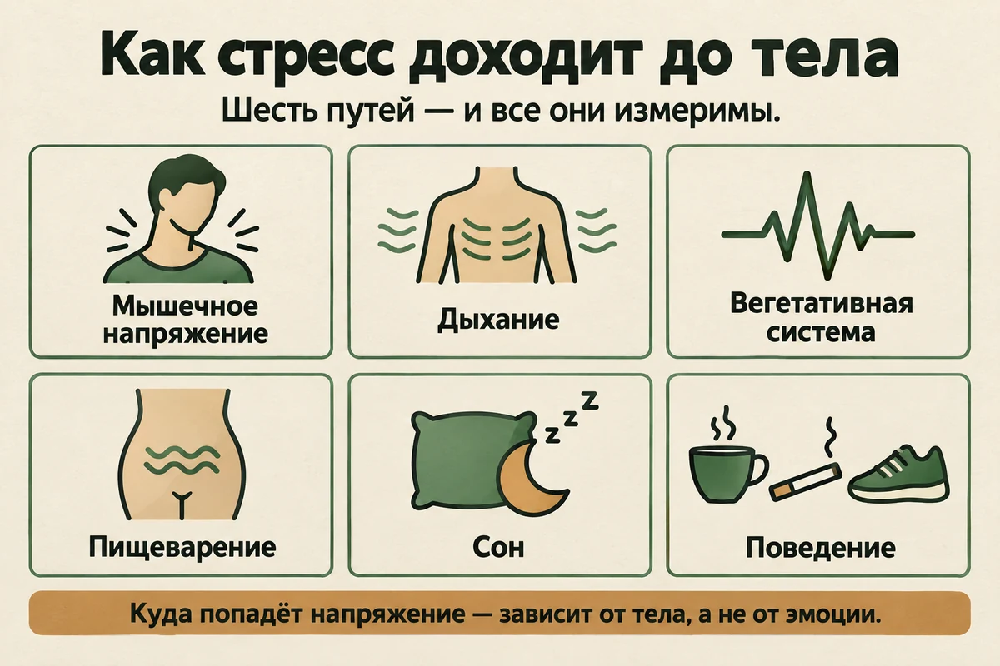
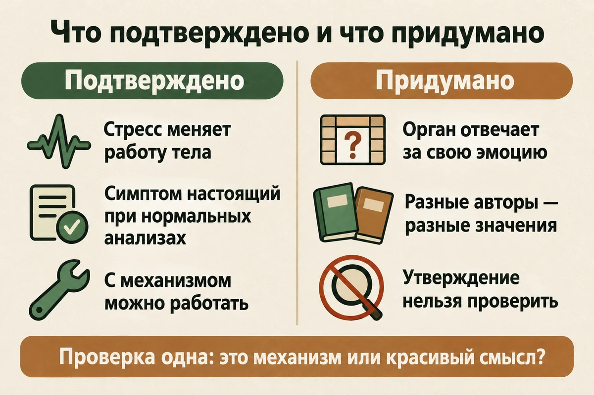
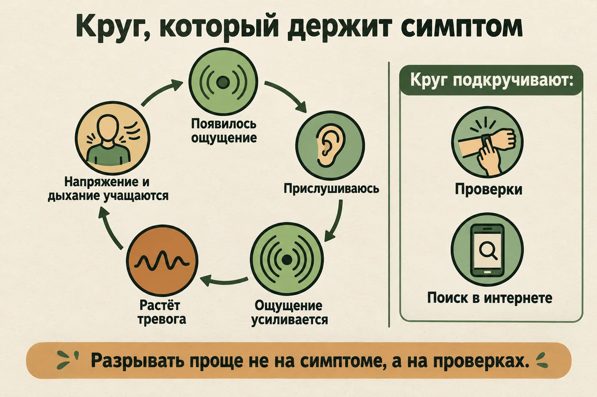
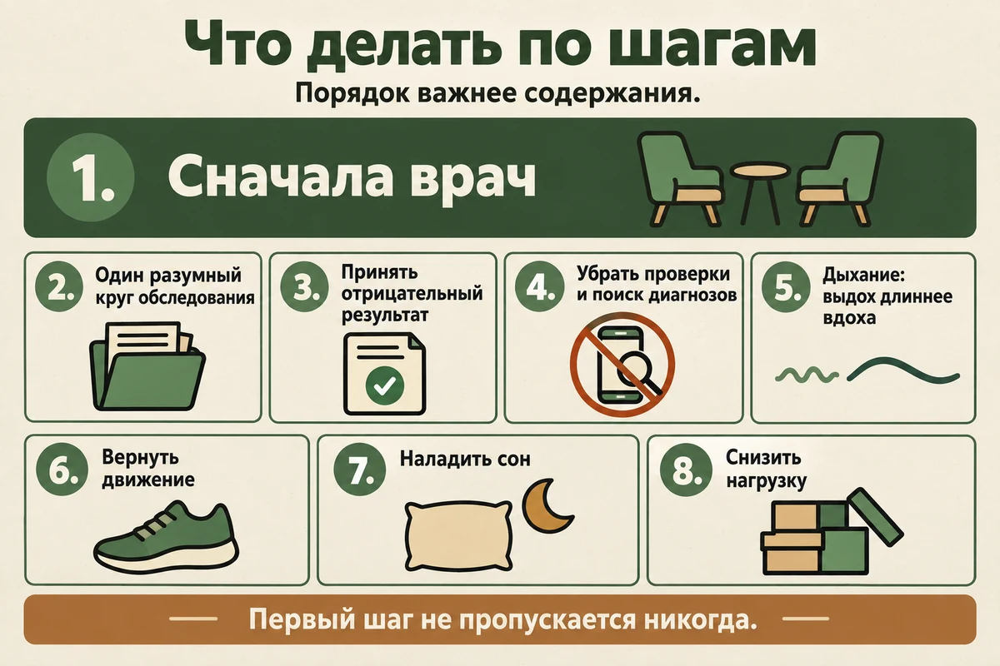

Главная → Блог → Психосоматика
Психосоматика: что из этого правда, а что миф
Обновлено: 09.09.2026 · 16 минут чтения
Словом «психосоматика» называют две совершенно разные вещи, и путаница между ними стоит людям здоровья. Первая — медицинский факт: стресс действительно доходит до тела и даёт настоящие симптомы, а у каждого четвёртого человека на приёме у врача жалобам не находят органического объяснения. Вторая — таблицы, где каждому органу приписана своя эмоция: горло отвечает за невысказанное, спина за груз ответственности, а болезнь оказывается наказанием за непрощённую обиду. Первое подтверждено и с этим можно работать. Второе придумано, и вреда от него больше, чем пользы. Ниже — как стресс на самом деле добирается до тела, почему «анализы в норме» не значит «вам показалось», и что делать, если симптом есть, а причины не находят.
- Два разных значения одного слова
- Что правда: как стресс доходит до тела
- Когда симптом есть, а причину не находят
- Психосоматика бывает и тогда, когда болезнь есть
- Что миф: таблицы «орган — эмоция»
- Чем опасно объяснение «это психосоматика»
- Круг: симптом усиливает тревогу, тревога усиливает симптом
- Что делать: 8 шагов
- Что помогает по доказательствам
- Когда к врачу немедленно
- Частые вопросы
Два разных значения одного слова
Когда человек ищет «психосоматику», он попадает сразу в две разные вселенные, и они друг с другом почти не пересекаются.
Первая — медицинская. Здесь психосоматика означает изучение того, как психологические факторы влияют на телесное здоровье и течение болезней. Речь о конкретных механизмах: что делает с телом длительное напряжение, как меняется дыхание при тревоге, почему при стрессе портится сон и что это тянет за собой. Никакой мистики, всё измеримо.
Вторая — популярная. Здесь психосоматика — это таблица соответствий: болит горло, потому что вы что-то не сказали; болит спина, потому что взвалили на себя лишнее; проблемы с ногами — потому что «не хотите двигаться дальше». Такая версия обещает быстрый ответ и ощущение контроля, и именно она заполняет выдачу.
Разницу удобно проверять одним вопросом: объяснение указывает на механизм или на смысл? «Мышцы шеи месяцами в напряжении, отсюда головная боль» — это механизм, его можно проверить и с ним можно работать. «Шея болит, потому что вы не хотите оглядываться назад» — это смысл, красивый и непроверяемый.
Уточнение, чтобы не впасть в другую крайность: разговор о смысле не запрещён и в терапии бывает полезен. Вопрос «что происходило в вашей жизни, когда это началось» — нормальная рабочая гипотеза о контексте. Проблема возникает в тот момент, когда гипотезу выдают за установленную причину и печатают в виде таблицы, одинаковой для всех.
Что правда: как стресс доходит до тела
Начнём с того, что подтверждено. Всемирная организация здравоохранения описывает стресс как состояние напряжения в ответ на трудную ситуацию и прямо перечисляет телесные последствия: головные боли, боли в теле, расстройство желудка, нарушения сна и аппетита. Это не метафора — путей, по которым напряжение доходит до тела, несколько, и они хорошо изучены.
- Мышечное напряжение. При тревоге мышцы держатся в тонусе — плечи, шея, челюсть, спина. Через несколько недель такого фона появляется настоящая боль: напряжённая мышца болит, независимо от того, что её напрягло.
- Дыхание. Тревога делает дыхание частым и поверхностным. Меняется газовый состав крови — отсюда головокружение, покалывание в пальцах, ком в горле, ощущение нехватки воздуха и стеснения в груди. Этот механизм объясняет часть телесных ощущений при панической атаке — хотя сама паника устроена сложнее и одним дыханием не исчерпывается.
- Вегетативная нервная система. Она управляет тем, что не подчиняется воле: пульсом, давлением, потоотделением, работой кишечника. При длительном напряжении её баланс смещается, и человек получает сердцебиение, потливость, позывы в туалет, сухость во рту.
- Пищеварение. Связь кишечника и нервной системы двусторонняя и плотная, поэтому при стрессе так часто «сводит живот», меняется стул, появляется тошнота. Часть случаев синдрома раздражённого кишечника разбирают именно здесь.
- Сон. Недосып сам по себе усиливает боль, снижает порог чувствительности и ухудшает настроение — и замыкает круг, потому что от боли и тревоги спится ещё хуже. Как разорвать эту петлю, разобрано отдельно в статье про бессонницу при тревоге.
- Поведение. Самый недооценённый путь. Под нагрузкой человек хуже ест, меньше двигается, больше курит и пьёт, пропускает лекарства и откладывает визит к врачу. Это влияет на здоровье не меньше гормонов, только выглядит скучнее.

Обратите внимание, чего в этом списке нет: соответствий между конкретным органом и конкретным чувством. Механизмы работают неспецифично — одно и то же напряжение у одного человека даст головную боль, у другого желудок, у третьего сердцебиение. Куда именно «попадёт», зависит от особенностей тела и от того, куда направлено внимание, а не от того, какую эмоцию вы подавили.
Когда симптом есть, а причину не находят
Это самая частая и самая мучительная ситуация: человек ходит по врачам, сдаёт анализы, всё в норме — а симптом на месте. И где-то на третьем круге он слышит «это у вас нервное», что звучит как «вы всё выдумали».
Не выдумали. Британская служба здравоохранения формулирует это прямо: такие симптомы не подделка и не «всё в голове» — они настоящие и реально мешают человеку функционировать. Более того, это не редкий случай: по данным NHS, примерно у каждого четвёртого человека, пришедшего к врачу общей практики, есть телесные симптомы, которым не находят объяснения.
Чаще всего это боли в мышцах и суставах, боль в спине, головные боли, утомляемость, головокружение, боль в груди, сердцебиение и проблемы с желудком. У части таких состояний есть свои названия — синдром раздражённого кишечника, фибромиалгия, синдром хронической усталости, функциональные неврологические расстройства.
«Функциональный» не значит «выдуманный». Это значит, что нарушена работа системы, а не её устройство: поломки на снимке нет, но система сбоит. Примерно как программный сбой при исправном железе — вы же не скажете, что компьютер притворяется.
Из этого следует важное — и здесь нужна точность. Нормальный результат означает, что в рамках проведённых исследований не нашли причину, которую они способны выявить. Это не значит «проверено всё», и это не доказывает, что причина психологическая. Но это и не «ничего не нашли, идите домой»: снятые опасные версии — полезный результат, который позволяет заняться тем, что поддерживает симптом сейчас. Проблема начинается, когда человек не верит результату и идёт на десятый круг обследований, — тогда растёт тревога, а вместе с ней и симптом.
Психосоматика бывает и тогда, когда болезнь есть
До сих пор мы разбирали две ситуации: болезнь нашли или не нашли. Но самая частая — третья, и о ней почти не пишут: заболевание есть, и психологические факторы влияют на то, как оно протекает.
Это и есть психосоматика в широком, медицинском смысле. Она не про «симптомы без диагноза», а про двустороннюю связь: психика влияет на тело, тело влияет на состояние. Обзор в The Lancet (2024) прямо описывает, что стойкие телесные симптомы могут появляться после инфекций и травм, на фоне уже имеющихся заболеваний, после стрессовых событий — или без единого явного повода.
Как это выглядит на практике:
- хроническая боль, которая переносится тяжелее на фоне тревоги и недосыпа;
- синдром раздражённого кишечника, обостряющийся в периоды нагрузки;
- мигрень, которая учащается при сбитом режиме сна;
- гипертония, на которую влияют и стресс, и то, регулярно ли человек принимает назначенное;
- кожные заболевания, которые обостряются при сильном напряжении;
- любое хроническое состояние на фоне депрессии, когда человек перестаёт лечиться по схеме.
Практический вывод один и важный: слово «психосоматика» не означает, что болезни нет. Оно означает, что у состояния есть ещё один слой, с которым можно работать, — и работа с ним не отменяет лечения, а делает его результативнее.
Что миф: таблицы «орган — эмоция»
Теперь про вторую вселенную. Таблицы, где напротив каждой болезни стоит своя эмоция, — самый узнаваемый образ психосоматики и самая слабая её часть.
Проблем с ними три, и каждой достаточно.
- Они не выведены из исследований. Это авторские построения из популярных книг, а не результат наблюдения за пациентами. За соответствием «щитовидная железа — невысказанное» не стоит выборки, контрольной группы и проверки.
- Они противоречат друг другу. Откройте двух разных авторов — и один и тот же орган будет отвечать за разные чувства. Для настоящей закономерности это невозможно: физика не меняется от того, чью книгу вы открыли.
- Они необратимы в проверке. Утверждение сформулировано так, что его нельзя опровергнуть: не нашли у себя нужную обиду — значит, плохо искали или вытеснили. Всё, что нельзя опровергнуть в принципе, находится за пределами науки.
При этом понятно, почему они так популярны, и смеяться тут не над чем. Человеку плохо, врачи разводят руками, а таблица даёт мгновенный ответ и ощущение, что ситуация под контролем: найди эмоцию — и всё пройдёт. Это очень человеческая потребность. Беда в том, что ответ ложный, а цена у него реальная.

Психосоматика по органам: что известно, а что придумано
Раз уж таблицу ищут — вот честная версия. Слева то, что действительно описано, справа то, что дописали сверху.
| Жалоба | Что известно | Что не доказано |
|---|---|---|
| Ком в горле | Напряжение мышц глотки и шеи при тревоге даёт это ощущение | «Горло — про невысказанные слова» |
| Боль в спине и шее | Длительное мышечное напряжение и малоподвижность усиливают боль | «Спина — про груз ответственности» |
| Живот, кишечник | Связь нервной системы и ЖКТ описана, при стрессе картина меняется | «Желудок — про непереваренную обиду» |
| Сердцебиение | Тревога учащает пульс и делает его заметнее для человека | «Сердце — про разбитую любовь» |
| Головная боль | Напряжение, недосып и повышенная чувствительность к боли | «Голова — про подавленные мысли» |
| Кожа | Часть кожных состояний обостряется в периоды сильного напряжения | «Кожа — про границы и стыд» |
Разница между колонками не в красоте формулировки, а в проверяемости. Левая говорит, что происходит, и подсказывает, что менять. Правая говорит, что это значит, и не подсказывает ничего, кроме чувства вины.
Чем опасно объяснение «это психосоматика»
Само по себе слово безобидно. Опасным его делают два способа применения.
Первый — отложенное лечение. Если человек уверен, что боль в груди или потеря веса «от нервов», он не идёт обследоваться. За теми же жалобами могут стоять состояния, где счёт идёт на недели. Отдельно и прямо: нет убедительных данных, что обида, непрощение или подавленная эмоция сами по себе вызывают рак. Национальный институт рака США формулирует осторожно: связь хронического стресса с онкологическими заболеваниями изучали, результаты исследований расходятся, а влияние, если оно есть, может быть косвенным — через курение, алкоголь, переедание и снижение активности. Чего в этой картине точно нет — так это конкретной обиды, вызвавшей конкретную опухоль. Зато точно известно другое: «проработка» вместо лечения стоила жизни не одному человеку.
Второй — вина. Популярная психосоматика незаметно делает человека виноватым в собственной болезни: не проработал, не простил, не отпустил. К симптому добавляется стыд, а стыд усиливает напряжение — то самое, которое и поддерживает симптом. Получается идеально замкнутая конструкция, из которой человек выходит с ощущением, что он сам себе враг.
Если вам или близкому поставили серьёзный диагноз, психологическая помощь нужна и полезна — она снижает тревогу, помогает пережить лечение и вернуться к жизни. Но именно рядом с лечением, а не вместо него. Любой человек, который предлагает заменить терапию «проработкой», делает вам плохо, даже если говорит мягким голосом.
Круг: симптом усиливает тревогу, тревога усиливает симптом
Есть механизм, который объясняет, почему безобидное ощущение превращается в проблему на полгода. Он простой и работает почти у всех.
Сначала появляется телесное ощущение — покалывание, ком в горле, перебой в сердце. Дальше включается внимание: человек начинает прислушиваться. Внимание усиливает ощущение — это не образ речи, а свойство восприятия: то, за чем следишь, воспринимается ярче. Усилившееся ощущение пугает сильнее, тревога растёт, а вместе с ней растут мышечное напряжение и частота дыхания — то есть ровно то, что и производит симптом. Круг замкнулся.
Подкручивают его две привычки:
- Проверки. Померить давление в десятый раз, прощупать место, где болит, прислушаться к сердцу. Каждая проверка приносит облегчение на минуту и усиливает тревогу в долгую — механизм тот же, что при навязчивых мыслях.
- Поиск в интернете. Симптом всегда найдётся в списке чего-нибудь страшного. Полчаса поиска гарантированно повышают тревогу, а тревога — симптом.

Отсюда практический вывод: разрывать круг проще не в точке «симптом», а в точке «проверки». Отказ от десятой проверки ощущается тяжелее, чем кажется, но именно он снимает подпитку. Тот же приём лежит в основе лечения ОКР, где проверки и есть главный симптом.
Что делать: 8 шагов
Порядок здесь важен, но понимать его стоит правильно: медицинская оценка обязательна, а вот ждать «полного исключения всего», прежде чем заняться сном, нагрузкой и тревогой, не нужно. Эти вещи идут параллельно.
- Начните с врача. Идите к терапевту и опишите жалобы — он решит, какое обследование нужно. Новый, выраженный или меняющийся симптом должен быть осмотрен, и это не формальность. Но пока идёт обследование, заниматься сном, движением и уровнем нагрузки можно и нужно: это не «лечение вместо диагностики», а то, что помогает в любом случае.
- Договоритесь об объёме обследования. Один разумный круг, а не бесконечный. Обсудите с врачом, что именно проверяем и на чём останавливаемся, — иначе поиск сам станет симптомом.
- Примите отрицательный результат как результат. «Ничего не нашли» — это информация, а не отказ в помощи. Дальше вопрос меняется: не «что со мной», а «что поддерживает этот симптом».
- Уберите лишние проверки и поиск диагнозов. Не увеличивайте самопроверки без медицинской необходимости: если врач назначил домашний мониторинг, держитесь согласованной с ним схемы, а всё сверх неё — это уже тревога, а не измерение. То же с поиском: перестаньте использовать интернет как способ успокоиться. Читать о здоровье нормально, бесконечно искать подтверждения — нет.
- Займитесь дыханием. Несколько минут в день с выдохом длиннее вдоха. Это не «успокоительная техника», а прямое воздействие на механизм: замедленное дыхание снижает телесное возбуждение, из которого растёт половина симптомов.
- Верните движение. Регулярная посильная нагрузка снимает мышечное напряжение, улучшает сон и снижает тревожность. NHS называет её среди основных рекомендаций при таких симптомах, и это тот случай, когда банальный совет действительно работает.
- Наладьте сон. Недосып усиливает боль и тревогу и делает всё остальное бессмысленным. Начинать стоит с него, а не с «проработки».
- Снизьте нагрузку там, где она реально высокая. Если симптомы появились в период перегрузки, никакая техника не переиграет источник. Иногда единственный рабочий шаг — перестать тянуть то, что тянуть не обязательно; про это отдельно в статьях о стрессе на работе и личных границах.
Разобрать свой случай бывает проще вслух: когда появился симптом, что происходило в жизни в этот период, сколько раз в день вы его проверяете и что усиливает тревогу вокруг него. Анонимно, без регистрации, в любое время суток.
Разобрать, что усиливает симптом
Что помогает по доказательствам
Когда обследование ничего не нашло, а симптом остался, набор рабочих вариантов довольно узкий — и это хорошая новость, потому что не надо перебирать сто методов.
- Когнитивно-поведенческая терапия. Один из наиболее изученных психологических подходов при стойких телесных симптомах; NHS называет его прямо. Работа идёт не с «поиском вытесненного», а с кругом из предыдущего раздела: с проверками, с катастрофическими мыслями о симптоме и с избеганием. Подробнее — в разборе когнитивно-поведенческой терапии.
- Практики осознанности. Помогают переучить отношение к телесным ощущениям: замечать их без немедленной интерпретации «это опасно». Особенно полезны тем, у кого главная проблема — постоянное сканирование тела; см. разбор подхода.
- Работа с образом жизни. Сон, движение, сокращение алкоголя и кофе. Скучно, но по эффекту сопоставимо с остальным.
- Лекарства — по назначению врача. NHS отмечает, что иногда при таких симптомах назначают антидепрессанты, даже если депрессии нет: они влияют на восприятие боли. Это решение врача, а не самостоятельный выбор.
- Физиотерапия и работа с телом — там, где ведущий симптом мышечный или двигательный.
И то, что стоит держать в голове как фон: NHS отдельно напоминает, что тело обладает значительной способностью восстанавливаться, и у большинства людей такие симптомы со временем становятся легче.
Если за телесными симптомами обнаруживается постоянная тревога, стоит посмотреть шире — полный гид по тревоге объясняет, как она устроена, а оценить её уровень за две минуты можно тестом GAD-7. Если же на первом плане не тревога, а опустошённость и «нет сил», причина может быть в выгорании.
Когда к врачу немедленно
Всё написанное выше касается ситуаций, где обследование уже пройдено. Есть признаки, при которых ничего не «прорабатывают», а обращаются за помощью сразу:
Скорая помощь, немедленно
- боль или давление в груди — особенно с одышкой, холодным потом, слабостью, отдающая в руку или челюсть;
- внезапная слабость или онемение в руке и ноге с одной стороны, перекос лица, нарушение речи;
- внезапная тяжёлая одышка;
- внезапная и необычно сильная головная боль, какой никогда не было.
Здесь — 112, не откладывая и не дочитывая эту страницу. «У меня просто нервы» — самая дорогая ошибка в этой теме.
Записаться к врачу, не откладывая надолго
- потеря веса без понятной причины;
- кровь в стуле, моче или рвоте;
- температура, которая держится без объяснения;
- симптом, который постепенно усиливается или не проходит неделями;
- ощущение, которое изменило характер: было одно, стало другое.
Отдельная оговорка про возраст: сам по себе он не делает симптом срочным. Значение имеет другое — появился ли симптом впервые, меняется ли он и есть ли у вас хронические заболевания. Это оценивает врач.
Частые вопросы
Психосоматика — это правда или выдумка?
И то, и другое, потому что словом называют две разные вещи. Влияние стресса на тело — это медицинский факт: напряжение мышц, сбитое дыхание, нарушенный сон и работа вегетативной нервной системы дают настоящие симптомы, и NHS отмечает, что примерно у каждого четвёртого человека на приёме у врача есть физические жалобы, которым не находят органического объяснения. Выдумка — это таблицы, где каждому органу приписана своя эмоция: «горло — невысказанные слова», «спина — груз ответственности». Такие соответствия не подтверждены исследованиями, а придуманы авторами популярных книг.
Могут ли болезни возникать «от нервов»?
Корректнее сказать так: стресс редко бывает единственной причиной заболевания, но он влияет на его развитие, течение, выраженность симптомов и скорость восстановления. Он повышает давление и мышечное напряжение, ухудшает сон, сбивает пищеварение, снижает приверженность лечению и подталкивает к курению и алкоголю. Поэтому при стрессе обостряются уже имеющиеся состояния и появляются реальные симптомы без структурной поломки. А вот утверждение «эта конкретная болезнь возникла от этой конкретной обиды» — уже не медицина, а гадание: такой связи никто не показал.
Что значит, если анализы в норме, а симптомы есть?
Это значит, что в рамках проведённых исследований причину не нашли. Формулировка важна: «анализы в норме» не равно «проверено всё» и не доказывает, что дело в психике. Симптомы при этом точно не выдуманы — NHS подчёркивает, что они настоящие и реально мешают жить. У такой картины есть медицинское название, «функциональные» или «медицински необъяснимые» симптомы, и она очень распространена: сюда относят часть случаев синдрома раздражённого кишечника, фибромиалгии, хронической усталости. Разумный шаг — не бросать наблюдение у врача и одновременно заняться тем, что усиливает симптом: сном, нагрузкой, дыханием, мышечным напряжением и тревогой вокруг самого ощущения.
Правда ли, что рак возникает от обид и непрощения?
Убедительных научных оснований для этого нет. Национальный институт рака США описывает картину так: связь хронического стресса с онкологическими заболеваниями изучали, но результаты исследований расходятся, и если влияние есть, оно может быть косвенным — через поведение, которое меняется под нагрузкой: курение, алкоголь, переедание, малоподвижность. То есть «стресс вреден» и «конкретная обида вызвала конкретную опухоль» — совершенно разные по силе утверждения, и второе не подтверждено ничем. Вред от такой идеи двойной: человек теряет время на «проработку» вместо лечения и вдобавок получает чувство вины за собственную болезнь. Психологическая помощь при серьёзном диагнозе нужна и полезна — но рядом с лечением, а не вместо него.
Можно ли справиться с психосоматикой самостоятельно?
Частично да, если речь о симптомах на фоне стресса и врач уже исключил органические причины. Работают понятные вещи: наладить сон, вернуть регулярное движение, снизить нагрузку, освоить замедленное дыхание с длинным выдохом, перестать проверять симптом по сто раз в день и гуглить диагнозы. Этого часто хватает. Обращаться за помощью стоит, если симптом держится месяцами, если жизнь начала строиться вокруг него или если появились тревога и подавленность — тогда нужен специалист, и чаще всего работают с помощью когнитивно-поведенческой терапии.
К какому врачу идти с психосоматикой?
Начинать стоит с терапевта: он решает, какое обследование нужно по вашим жалобам, и при необходимости направляет к профильному специалисту. Пропускать этот шаг не надо — новый или меняющийся симптом должен осмотреть врач. При этом ждать окончания всех обследований, чтобы обратиться к психологу, не обязательно: если очевидно, что симптомы усиливаются на фоне стресса, тревоги или недосыпа, работать с этим можно параллельно. Когда обследование ничего не нашло, а симптомы остались, подключают психотерапевта или клинического психолога, иногда врача-психиатра — при выраженной тревоге или депрессии. NHS отмечает, что при таких симптомах помогает когнитивно-поведенческая терапия, а иногда врач назначает антидепрессанты, даже если депрессии нет.
Работают ли таблицы психосоматики Луизы Хей?
Как диагностический инструмент — нет. Соответствия «орган — эмоция» в этих таблицах не выведены из исследований, они придуманы, и разные авторы дают разные значения для одного и того же органа, что само по себе показательно. Популярность у них есть, и объяснить её нетрудно: таблица даёт быстрый ответ и ощущение контроля там, где медицина отвечает «нужно обследоваться». Проблема в цене такого ответа — человек ищет виноватую эмоцию вместо того, чтобы разбираться с реальными механизмами, а иногда и вместо того, чтобы лечиться.
Как отличить психосоматику от настоящей болезни?
Самостоятельно — никак, и это главный практический вывод. Тревога умеет имитировать почти любое телесное состояние, но и серьёзные заболевания годами выглядят как «нервы». Поэтому решение о том, что стоит за симптомом, принимает врач, а не вы и не статья в интернете. Полезнее задавать себе другой вопрос — не «болезнь это или психика», а «что усиливает мой симптом прямо сейчас»: недосып, нагрузка, постоянные проверки, тревожное ожидание. С этим можно работать независимо от того, чем закончится обследование. И отдельно: при боли в груди с одышкой, внезапной слабости в руке или ноге, нарушении речи или необычно сильной головной боли вызывают скорую, а не разбираются в механизмах.
Статья носит просветительский характер и не заменяет консультацию врача. Она не предназначена для самодиагностики: любые телесные симптомы должен оценить врач. Если вам прямо сейчас невыносимо тяжело или появляются мысли о том, чтобы причинить себе вред, позвоните: 112 — при угрозе жизни; +7 (495) 989-50-50 — круглосуточная линия ЦЭПП МЧС России; 8-800-2000-122 (с мобильного — 124) — детям, подросткам и их родителям; 051 (с мобильного 8 (495) 051) — для Москвы. Куда ещё можно обратиться бесплатно — в справочнике помощи.
Читать также
- Тревога: полный гид по видам и способам справиться — если за симптомами стоит постоянное напряжение.
- Паническая атака: что делать в момент приступа — про самый яркий пример телесной тревоги.
- Бессонница при тревоге — недосып усиливает боль и тревожность.
- Тест на тревожность GAD-7 — 7 вопросов, результат сразу и без регистрации.
- Стресс на работе: 8 способов справиться — если симптомы появились в перегрузку.
- Эмоциональное выгорание — когда на первом плане не тревога, а опустошённость.
- Навязчивые мысли — про механизм проверок, который поддерживает симптом.
- Когнитивно-поведенческая терапия — наиболее изученный психологический подход при таких симптомах.
Материал подготовлен командой AI Therapist и основан на позиции доказательной медицины: описание механизмов влияния стресса на тело и рекомендации по помощи приводятся по материалам NHS и ВОЗ. Мы сознательно не воспроизводим таблицы соответствий «орган — эмоция» из популярной литературы: они не имеют научного подтверждения. Статья носит просветительский характер, не является медицинской рекомендацией и не заменяет консультацию врача — любые телесные симптомы должен оценивать врач, и обследование не заменяется работой с психологом.
Источники: NHS — Medically unexplained symptoms, ВОЗ — Stress: questions and answers, NHS — Stress, Löwe B. et al. «Persistent physical symptoms: definition, genesis, and management», The Lancet, 2024, Национальный институт рака США — Stress and Cancer, NHS — Health anxiety. Источники проверены 09.09.2026.
Кто отвечает за содержание сайта и по каким правилам мы готовим материалы — на странице о проекте.